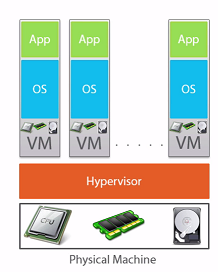
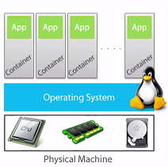
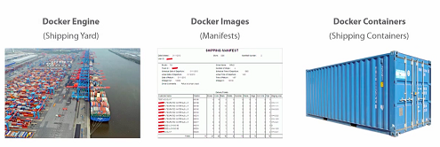
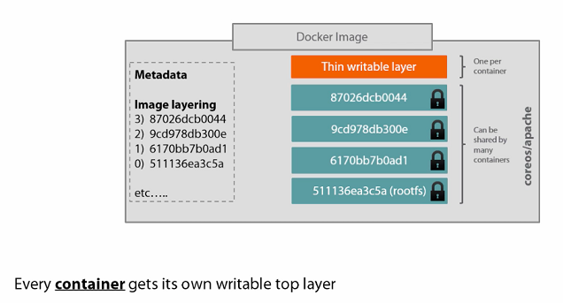
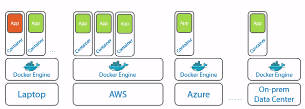

Docker Introduction¶
Docker is the world’s leading software containerization platform. Docker/container technology becomes more and more popular these days. This blog introduces the basic concept of the above technology.
What is docker¶
In the old days, physical machine is the basic deployment unit which means one server hosts one application. The application has good isolation, however it is too expensive not only the hardware but also the maintaince effort.
Then virtual machine model is introduced, see following figure:
It helps but still expensive, since each virtual machine needs to support a full operating system.
Thereby, docker is invented which is a lightweight virtual machine:
The intention of docker is to provide isolation environment for applications and also cost efficient.
Differences between VMs and Docker containers:
- Docker is application oriented, whereas VMs are operating-system-oriented
- Docker containers share an operating system with other Docker containers. In contrast, VMs each have their own operating system managed by a hypervisor
- Docker containers are designed to run one principal process, not manage multiple sets of processes
Basic concepts¶
Docker Engine: is also be called as docker daemon or docker runtime
Images: An image is a collection of filesystem layers and some metadata. Taken together, they can be spun up as Docker containers
Containers: A container is a running instance of an image. You can have multiple containers running from the same images
Docker on your host machine is split into two parts: a daemon with a RESTful API and a client that talks to the daemon. Docker client is what you run when you type commands, whose job is to communicate with the Docker daemon via HTTP requests.
Docker registry: For example, Docker hub. We can also have private registry in the company
Layers¶
Layers: A layer is a collection of changes to files.
Docker layering helps you manage a big problem that arises when you use containers at scale. Imagine what would happen if you started up hundreds - or even thousands of same images, and each of those required a copy of the files to be stored somewhere. Disk space would run out pretty quickly. By default, Docker internally uses a copy-on-write mechanism to reduce the amount of disk space required. This partly explains how Docker containers can start up so quickly - they have nothing to copy because all the data has already been stored as the image.
Some commands in the Dockerfile will create layer:
- RUN: RUN instruction will create a new layer
- while CMD is run time instruction. Equivalent of docker run ...
- ENV instruction can create variables, also add new layer. The variables can be used by $var1...
When you push the image to the registry, only the new layer will be pushed.
Tagging¶
Understanding docker tags:
- Tags denote a version of your container
- Latest is used to denote latest published version
- Make tags always an ever increasing number
Deployment options¶
Docker is written in GoLang, currently there are many options for docker deployment.
For instance, for Azure support only the following options are available:
- Azure Container service
- Azure app service
- Azure Service Fabric
Basic commands¶
Docker requires admin right, if you work on Linux OS like Ubuntu it is cumbersone to type sudo every time. You can use sudo su: to switch to root user.
Get general information¶
docker -v
docker version: will give more information
docker info
uname -r/-a: show the kernal version
Image¶
docker build: Build a docker image.
docker tag: Tag a docker image
docker images: Show all docker images
docker history [imagename] –no-trunc: Show the image layers
docker rmi -f $(docker images -q): Remove all docker images
Container¶
docker ps: List containers.
docker ps –all: List all containers, including the completed ones
docker run: Run a docker image as a container.
Run docker as detach mode:
- docker run –d –p 5000:5000 registry
- docker run -d –restart=on-failure/always/no
docker commit: Commit a docker container as an image. When a docker commit is performed, this new area of disk is frozen and recorded as a layer with its own identifier.
docker attach: Attach local standard input, output, and error streams to a running container
docker rm: to remove a container
docker top: Display the running processes of a container.
docker inspect: Return low-level information on Docker objects.
Docker logs: can see status inside a running container
docker exec [containername] [command]: Run a command in a running container. For example: docker exec -it XXXX /bin/bash
docker stop: stop the container.
docker rm -f $(docker ps -a -q): delete all Docker containers